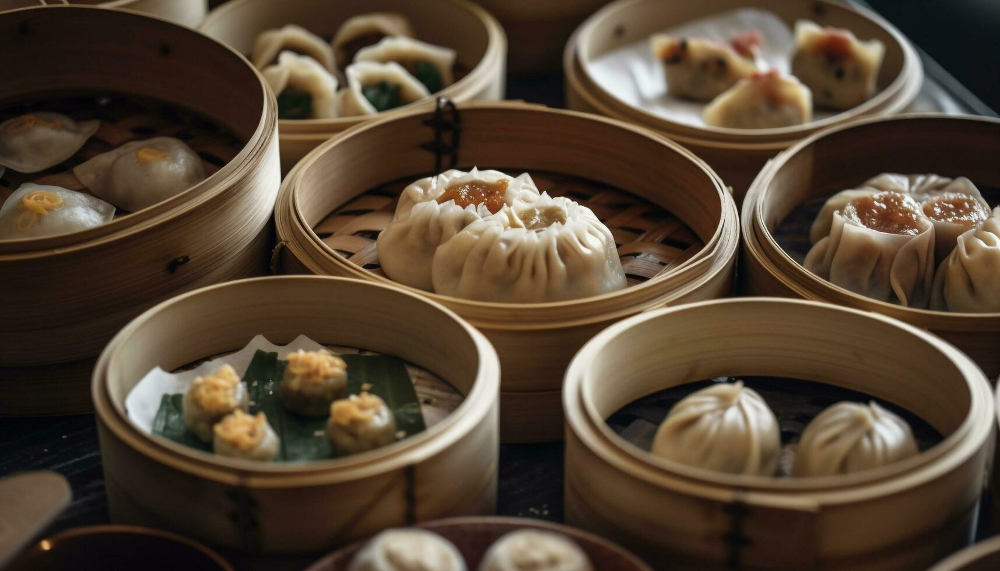
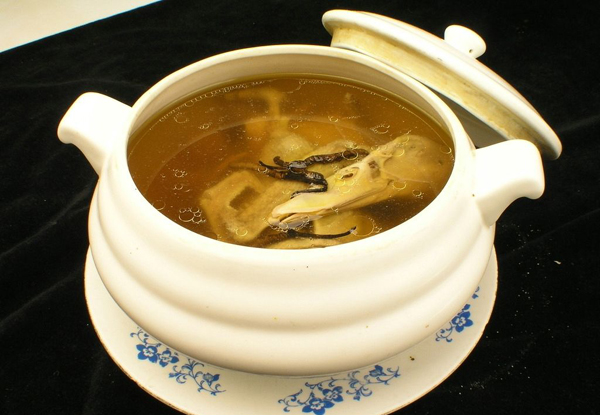

The Art of Cantonese Cuisine
Cantonese cuisine (Yue cuisine) is celebrated worldwide through the saying 'Eat in Guangzhou'. Blessed by a warm subtropical climate, fertile deltas, and abundant coastline, Guangdong chefs masterfully elevate natural ingredients into pure culinary poetry.
Classic Delicacies
-
Yum Cha & Dim Sum
The cherished tradition of sipping hot fragrant tea while enjoying delicate bite-sized 点心 (Dim Sum). Highlights include translucent har gow shrimp dumplings, savory barbecue pork buns, and sweet golden 流沙包 (Salted Egg Lava Buns). The gentle custom of flipping teapot lids to signal a refill adds charming cultural warmth.

-
Siu Mei (Cantonese Roast Meats)
Specialty roasted delicacies hanging enticingly behind glass vitrines: honey-glazed char siu pork, crispy skin roast goose, and crackling pork belly. Expertly chopped to order, balancing crisp golden skin with melting tenderness.

-
Beef Chow Fun
A timeless masterpiece of tender sliced beef rapidly stir-fried with smooth 河粉 (Shahe rice noodles) over volcanic flame. Flawless execution requires no excess oil, whole unbroken noodles, and the unmistakable smoky essence of 镬气 (Breath of the Wok).

Flavor Philosophy: Light, Fresh, Tender & Silky
Cantonese gastronomy adheres to four pillars: 'Qing' (pure and clean broth), 'Xian' (fresh and alive ingredients), 'Nen' (tender and juicy textures), and 'Hua' (silky smooth mouthfeel). Minimal grease and subtle seasoning honor the true essence of each ingredient.
Slow-Simmered Soup Culture (Lao Huo Tang)

In Guangdong, 'a day without soup is a day without comfort'. Chefs slowly simmer bone broths with jujubes, goji berries, and herbal ingredients over low heat for hours. Nutrients infuse deeply into the clear broth, warming body and spirit.
Conclusion
Cantonese cuisine continues to inspire global culinary traditions through its unwavering dedication to ingredient freshness and gentle, restorative cooking philosophies.